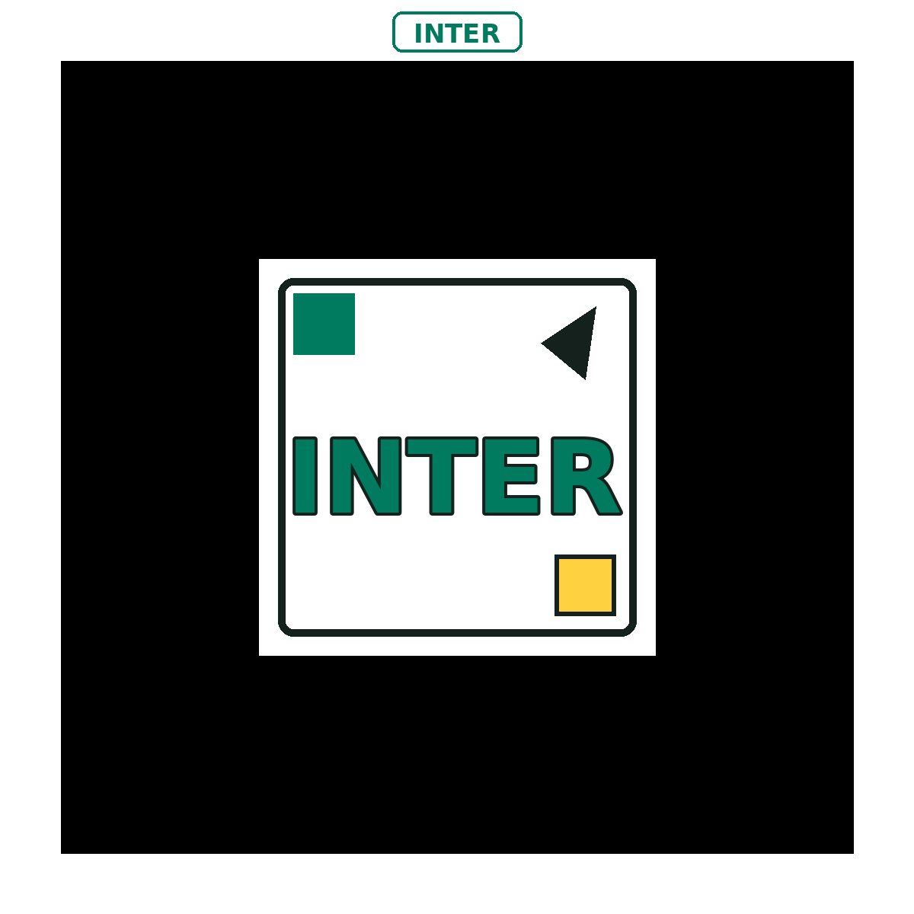
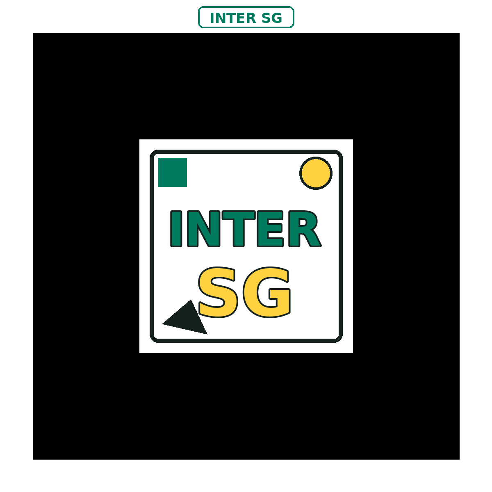

Imágenes con efecto holográfico, profundidad y sensación premium.
Commercial Edition

Immersive AR Experience Builder
Future AR Studio
Generador Realidad Aumentada
Plataforma comercial con visuales futuristas para crear experiencias de Image, Video MP4/WebM, YouTube, PDF document y Web link. Incluye 3D visual mode, premium QR styles, generación de Markers y exportación de recursos lista para compartir.
INTER SG, INTER y HIRO con vista previa, descarga PNG y PATT.
Integrated Version y separada para una experiencia flexible.
Compatible con GitHub Pages y con enlaces del Content Collection.
Flexible Marker Options
Use Marker INTER SG para branding localizado, Marker INTER para una versión más comercial o institucional, y Marker HIRO para un flujo totalmente genérico. El sistema actualiza el Marker tanto en la imagen generada como en el visor AR.
1. Build AR Experience
Construya una experiencia con una interfaz premium, tarjetas interactivas, visuales de futuro y workflow listo para negocio o educación.
También puede seleccionar el Marker desde las tarjetas visuales. Al hacer clic, el selector cambia automáticamente.INTER SG
Recomendado para San Germán.

INTER
Genérico para otras Inter. Este marcador dice solo INTER.
HIRO
Opción totalmente genérica.

Selected Marker Preview
Actualmente está seleccionado: INTER SG.
2. Export Experience Assets
El sistema crea dos versiones premium: Integrated y Separated. Ambas usan el Marker seleccionado y pueden compartirse fácilmente.
Integrated Version
The integrated visual will appear here.
QR Code + selected Marker in one single visual asset.
Separated Version
The separated visual will appear here.
One visual with a simplified QR and a larger separated Marker.
Download Marker Assets
Download each Marker separately in PNG and PATT format for a professional workflow.
Marker INTER SG
{kind=link}
{kind=link}
Recommended Workflow
- Seleccione el Marker Type.
- Genere los assets visuales y revise la vista previa.
- Publique la versión Integrated o Separated en su sitio, LMS o repositorio.
- El usuario escanea el QR y apunta al mismo Marker seleccionado.
Para un look más comercial, use Marker INTER. Para un flujo completamente universal, use Marker HIRO.